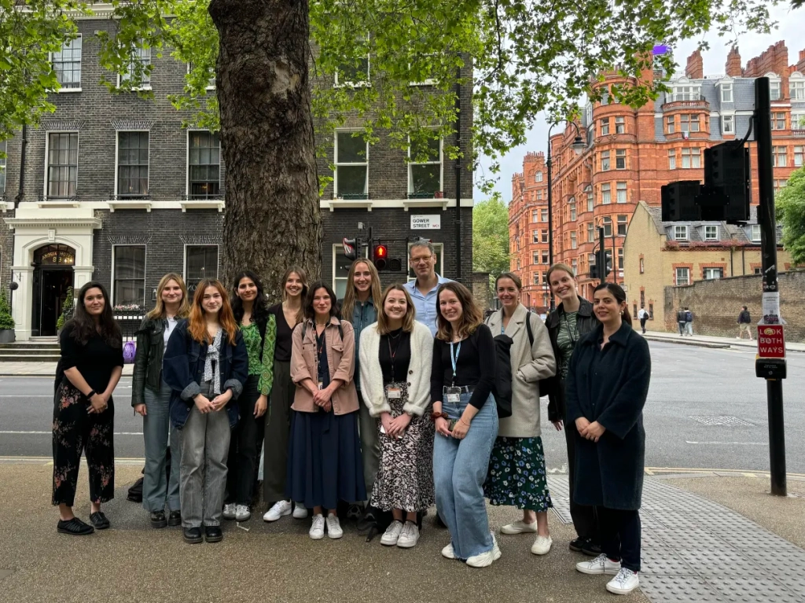

Project Title: Surprises as a Mechanism of Improvement in the Psychological Therapy of Anxiety and Depression in Young People.
Grant Reference: 226785/Z/22/Z
Project Start Date: 12/05/2023
Project End Date: 12/05/2028
Report authors: Stringaris A (UCL, PI), Payne M (UCL, post-doc), Spencer L (Oxford, post-doc), Bagdades E (UCL, research assistant), Delpech R (UCL, research assistant), Norman J (UCL, research assistant), Tromans N (Oxford, research assistant), Z Kokan (Oxford, research assistant), Krebs G (UCL, Co-I), Leigh E (Oxford, Co-I), Singh I (Oxford, Co-I).
Progress made over the past twelve months
We have made good progress towards our goals as indicated by the following:
Three research assistants have joined the team. Ms Raphaelle Delpech (15/04/24), with a background in psychology and neuroscience and Ms Jessica Norman (28/05/24), with a background in biology, psychology and clinical experience, have joined through UCL. Ms Zeba Kokan (19/09/24), with a background in brain and behavioural sciences and global studies, has joined through Oxford. We have weekly inter-disciplinary meetings between the UCL and Oxford sites. Please see Fig 1 depicting some of the members of the team.
Dr Daniel Rautio will be joining the team to work specifically on this Wellcome project. He is funded through a prestigious starting grant from the Swedish Research Council for Health, Working Life and Welfare; Forte. This grant of approximately £300,000, divided over a period of three to four years, is intended to promote establishment and independence in research by providing junior researchers with the opportunity to conduct their own research project. Dr Rautio will be with our team from August 2025 through July 2027, and work on WP4 and WP5,is an experienced psychologist and psychotherapist that has been responsible for the care of patients with body dysmorphic disorder (BDD) at the specialist obsessive-compulsive and related disorders clinic within the child and adolescent mental health services in Stockholm, Sweden, since the opening in 2015. He has taken the lead at evaluating and refining the clinic’s treatment manual for BDD, in collaboration with colleagues at the Maudsley Hospital in London, UK. He has also been in charge of building the clinic’s database of cases with paediatric BDD, which is one of the largest cohorts of BDD cases in the world. Further, he has led the first treatment trial evaluating internet-delivered CBT for children and adolescents with BDD. Having just finished his PhD, Dr. Rautio is already an established BDD researcher, and has published several studies of high quality in the field.
Development of Cognitive Tasks
We’ve made significant progress in developing novel cognitive tasks for our projects. In particular, we’ve created a task that simulates the experience of social interactions (“surprise task”). Through this task, we’ve already demonstrated a robust relationship between prediction errors and both mood and anxiety.
We have also developed a novel task to assess when and how individuals employ self-focussed attention, a crucial component of our active ingredients model. This task (“story-building task”) involves a collaborative story-building activity, in which young people must work together with online virtual players to create story snippets. We measure self-focussed attention through memory for participants’ own contributions to the stories, and have already found interesting pilot results that young people may become self-focussed in volatile social environments, when social feedback is unpredictable.
Online Recruitment of Participants (18-25 years)
We have recruited 1837 participants via Prolific. This includes participant recruitment for piloting during task development as well as recruitment of our final participant samples.
Community Recruitment of Participants (18-25 years)
For the surprise task, we have finished recruitment with 43 complete participants from the local community aged 18-25 years. We recruited via the UCL participant pool and via flyers distributed around UCL spaces.
School Recruitment of Participants (14-18 years)
So far, we have 40 complete participants, recruited from 6 schools. We have been building ongoing relationships with schools in the hopes of being able to get support with future studies and of understanding how we can make the recruitment process simple and rewarding for schools and students.
Development of Research Protocol for “Impression management and Authenticity” sub-study
This sub-study is lead by Dr Lucienne Spencer and will aim to answer the following research question: “How does ‘impression management’ impact young people with social anxiety disorder (SAD)?”
We hypothesise that impression management will have more negative impacts on young people’s ‘authentic self’ than overall positive impacts.
This study will:
Investigate the negative and positive impacts of impression management on young people with SAD.
Analyse the balance of negative and positive impacts of impression management on this population
Investigate how impression management impacts a young person’s authentic self. This will include refining the concept of ‘authenticity’ for young people that best maps onto their intuitions.
We will conduct 1:1 Semi-structured phenomenological interview of 40-50 young people with SAD, aged between 14 and 18 over Zoom. The interview will be approximately 2.5 hours. We have chosen to have the interview over Zoom because our participants have social anxiety disorder, and an in-person session would impact recruitment.
Progress on understanding the role of self-processing variables (self-focused attention, safety behaviours, and negative self-image) in producing or maintaining symptoms of social anxiety disorder
This effort is led by Naomi Tromans and involves:
A Systematic review and meta-analysis looking at the types of manipulations which have been used to experimentally alter these self-processing variables, and the effects of enhancing or reducing them on self-reported state anxiety and/or observer-reported anxious appearance across the lifespan.
Working towards this, a pre-registration has been published on Prospero (CRD42024554587 Available from: https://www.crd.york.ac.uk/prospero/display_record.php?ID=CRD42024554587) outlining eligibility criteria, search strategy, and analysis plans.
The review is currently nearing the end of full text screening.
Development of a qualitative sub-study investigating the subjective experience of self and external foci of attention in a sample of anxious adolescents.
This study utilises an element of Cognitive Therapy for Social anxiety, the self-focused attention and safety behaviours experiment. This experiment is used early in treatment and has been shown to effectively reduce state social anxiety. It involves the patient, or in this case participant, having one conversations being highly self-focused and using their safety behaviours, and another being externally focused and dropping these behaviours.
The qualitative interview aims to understand the subjective experience of each conversation, what works about the instructions or delivery to manipulate self-processing and to alter state anxiety. It also goes on to ask about experiences of these different modes of attention more generally in everyday life.
Progressing towards this, a protocol has been developed and piloted with YPAG members, along with the interview topic guide and in-session VAS measures, e.g. of state anxiety, perceived performance, and the occurrence and quality or negative self-imagery.
An ethics amendment was submitted and recruitment is intended to begin in January.
Progress on WP3: identifying the neural markers of social interactions and mood
- We have submitted and received approval from UCL Ethics to record EEG and MEG data simultaneously with performance on cognitive tasks in participants aged 16-25 years, following the same recruitment pathways currently in place.
- MEG and EEG are non-invasive functional imaging techniques with a high temporal resolution allowing us to track the neural underpinnings of trial-by-trial changes in social surprises and participant self-reported mood. The high temporal resolution of these tools will allow us to look at neural responses during (and in the milliseconds following) the presentation of social feedback to participants.
- In the next year, lab members based at UCL will undergo training for these methods, including safety practices, and we will work on adapting the tasks for EEG/MEG implementation.Preliminary findings and/or key discoveries
Surprise Task
We have collected data using the surprise task from the following groups: young adults between the ages of 18-25 through Prolific, young adults between the ages of 18-25 through local community recruitment, and students between the ages of 14-18 through school recruitment.
In a first set of analyses we used Linear Mixed Effects (LME) models to look at the relationship between social surprises or prediction errors (PEs) and momentary mood and anxiety. Specifically, we tested various models with different random effects structure as well as some that included trait social anxiety scores (mini SPIN scores) as a co-variate and some that didn’t.
Online recruitment (n=29)
The best fitted LME for mood and social prediction error was the following \(Mood \sim social\ PE + mini\ SPIN\ score + (social\ PE | Participant\ ID)\). The coefficient for the main effect of social PE on mood was 0.27 (95%CI = 0.16 - 0.38).
Online recruitment: LME for Mood and Social PE The best fitted LME for anxiety and social prediction error was the following \(Anxiety \sim social\ PE + mini\ SPIN\ score + (social\ PE | Participant\ ID)\). The coefficient for the main effect of social PE on mood was -0.15 (95%CI = -0.23 - -0.08).
Online recruitment: LME for Anxiety and Social PE
Local community recruitment (n=45)
The best fitted LME for mood and social prediction error was the following \(Mood \sim social\ PE + mini\ SPIN\ score + (social\ PE | Participant\ ID)\). The coefficient for the main effect of social PE on mood was 0.19 (95%CI = 0.12 - 0.27).
Community recruitment: LME for Mood and Social PE The best fitted LME for anxiety and social prediction error was the following \(Anxiety \sim social\ PE + mini\ SPIN\ score + (social\ PE | Participant\ ID)\). The coefficient for the main effect of social PE on mood was -0.07 (95%CI = -0.11 - -0.03).
Community recruitment: LME for Anxiety and Social PE
School recruitment (n=40)
The best fitted LME for mood and social prediction error was the following \(Mood \sim social\ PE + mini\ SPIN\ score + (social\ PE | Participant\ ID)\). The coefficient for the main effect of social PE on mood was 0.12 (95%CI = 0.06 - 0.18).
School recruitment: LME for Mood and Social PE The best fitted LME for anxiety and social prediction error was the following \(Anxiety \sim social\ PE + mini\ SPIN\ score + (social\ PE | Participant\ ID)\). The coefficient for the main effect of social PE on mood was -0.04 (95%CI = -0.07 - -0.02).
School recruitment: LME for Anxiety and Social PE
As part of a second set of analyses, we are also currently in the process of developing and testing various computational models to be fitted on the data from the surprise task, with the hope that these will provide a more thorough understanding of the underlying cognitive mechanisms.
Cone of Gaze Task (experiment + meta-analysis)
- In this study, we investigate ‘cone of gaze’ in social anxiety. Cone of gaze describes the width of eye gaze, that individual’s perceive as self-directed. Interestingly, people tend to judge quite a wide range of gaze angles as self-directed, often perceiving another person to be looking at them even if they are really looking some distance to the left or right of them. In social anxiety, patients may be even more susceptible to this. This may underlie symptoms such as excessive self-focussed attention and self-consciousness in social anxiety, but may provide a more easily manipulable target for therapy. Here, we assessed the size of the difference in gaze perception between social anxiety and non-anxious participants. We conducted a systematic review and meta-analysis, showing that individuals with social anxiety showed a moderately wider cone of gaze as self-directed than non-anxious participants (g = .59, CI = [.22, .95], p = .005). Further we conducted three experiments, showing that the difference between socially anxious and non-anxious groups was stronger when the stimuli were more threatening (faces with angry expressions). This suggests a promising avenue for the project, providing a potential outcome measure and/or target for therapeutic intervention.
Story-building task
- In the story-building task, participants work in teams to create stories, and are given feedback about how much they are valued by the team (how many players voted to keep them in the team). This set-up allows us to manipulate the feedback consistency and valence in different team environments, by changing how predictable (does the team’ behave the same way towards you throughout the whole game?) and how positive (does the team vote to keep you in the game or not?) the participant’s feedback is. To measure self-focussed attention, participants are asked about their memory for the interactions. We hypothesise that unpredictable social feedback will cue self-focussed attention in participants, and so participants will remember more of their own contributions than others’ during these blocks. So far, we have tested ~60 participants online, in two pilot studies, and 27 participants in a school setting. This project will allow us to better understand the conditions under which individuals shift their attention towards the self, and guide our interventions targetted at self-focussed attention.
Lived Experience
Young People’s Advisory Group (NeurOX YPAG)
The NeurOX YPAG has played an invaluable role in developing research for the Surprise Project. The YPAG is comprised of 33 young people aged 14-23 from a range of backgrounds and ethnicities.
For the Authenticity & Impression Management sub-study, the YPAG has helped develop an interview guide and has advised on the terminology that would be most accessible to young people participating in this study. YPAG members have also participated in trial runs of the interview guide, which has been adapted according to their feedback.
For the subjective experience of self-focused attention sub-study, the YPAG has helped pilot the study procedure, providing feedback on content of instructions and interviews, on session structure and length, and on session intensity.
The YPAG have given feedback on the story-building task, and as a result, updates have been made to make it feel more collaborative (by changing the prompts) and to create realistic and believable profiles for the team members. The YPAG have given feedback verbally via a meeting and also provided written feedback for the team member profiles.
Challenges, delays or risks
Optimising Allocation of Resources.
On 4th November we sent an email to Wellcome and followed up last week, about the following. We have already some major insights from our experimental work (as expanded above) and want to optimise the next steps, which in our case are designed to culminate in a large RCT of an innovative intervention to arise from or experimental work. As you may remember, it was your strong recommendation that we frame the final two work packages (WP4 and WP5) as a Randomised Controlled Trial (RCT). This requires specific work on the regulatory but also practical side, including the optimal sample size selection and the most feasible and promising methodology for mechanistic work.
To achieve this, we need to intensify further the experimental and recruitment work so that the intervention becomes as scalable as possible and is tested rigorously and mechanistically in a larger sample/samples of young people. For this, we believe that it would make most sense if we could make the following minor changes to the allocation of the budget.
Convert numerous short-term posts (indicated as “temporary PhD students” into fewer longer term RA/Fellow posts. They are presently at the equivalent of 70 months full time for these temporary contracts. Our work so far has shown that having fewer longer terms research assistants better serves the purposes of the project as they can be trained and operate within schools and communities much more effectively. This is because they are able to establish relationships with schools, a central aspect of this work. They also receive on the whole better training because of their time in the lab, including on quantitative methods but also in interactions with the YPAG and other collaborators. Having longer-term RAs will best serve the request for an RCT as they will be in best position to support it.
In keeping with the idea of optimally embedding mechanistic work, i.e. active ingredients work, into the RCT, we also ask to convert the funds for the Magnetoencephalography (MEG) to funds for Electroencephalography (EEG) and wider recruitment. MEG scanning is bound to a specifically designed scanning room, whereas EEG can in principle be portable and applied in non-specialist environments, such schools. The reason for preferring EEG over MEG is that having the portable EEG option for testing would be advantageous for testing the intervention in large sample sizes (which in turn is crucial for robust mechanistic inferences). Our work so far has demonstrated that we have an experimental set up that lends itself to large-scale testing which would be best served by EEG brain recordings. This switch would come at no cost to the testing of our hypotheses given that the temporal resolution (the key element for testing our hypotheses) is equivalent between the two methods. We specifically ask that we allocate the costs for MEG in such a way as to purchase a cutting-edge EEG machine (estimated max cost ~ £40,000) and the permission to use the rest of the money for even broader recruitment into the various phases of the mechanistic RCT (including online and in person participant testing costs and remuneration). The current funds allocated to MEG is £128,000 (original) + £69,516.71 (additional recent award).
We are happy to provide more details about these two changes and look forward to hearing back from Wellcome soon.